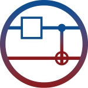

We presented a student‑built project at S.Q.U.I.D 2023 hosted by the Quantum Coalition, focusing on clear problem framing and transparent assumptions. Our goal was to make the work understandable to newcomers while still interesting to advanced peers.
The Q&A surfaced great suggestions—from evaluation metrics to dataset choices—that we took back into our iteration cycle. It was a valuable checkpoint and a confidence boost for the team.